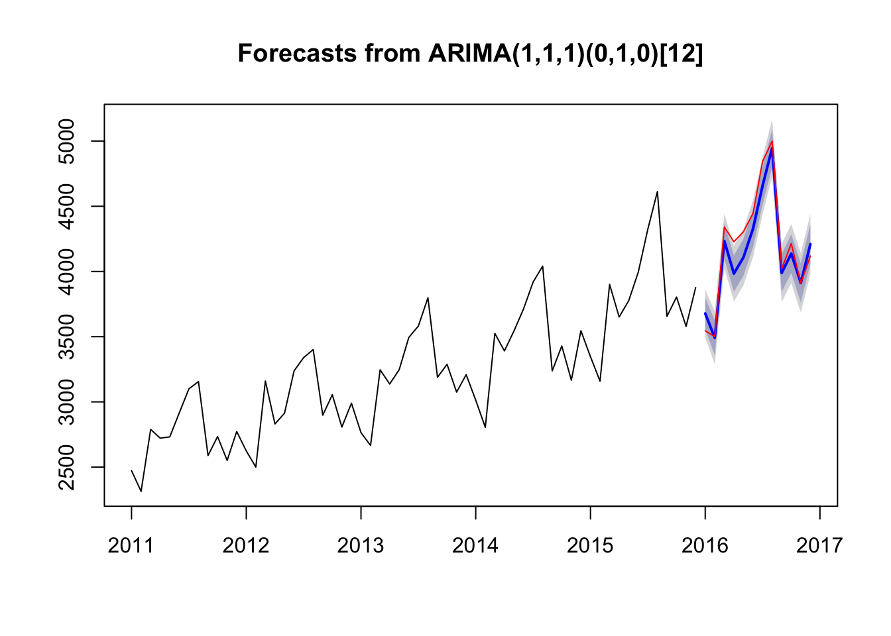
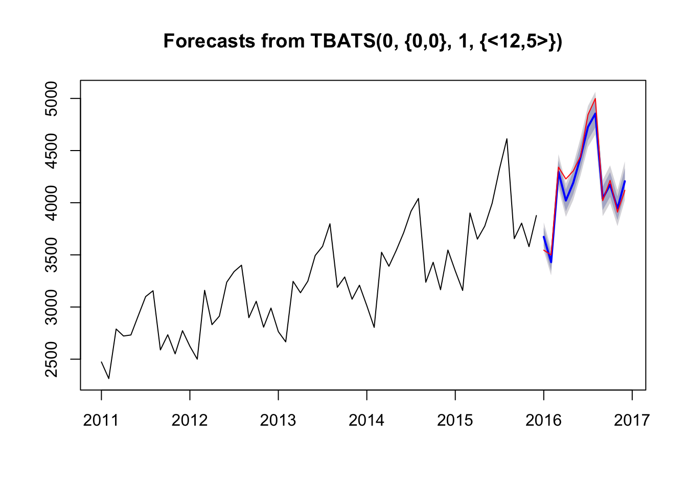
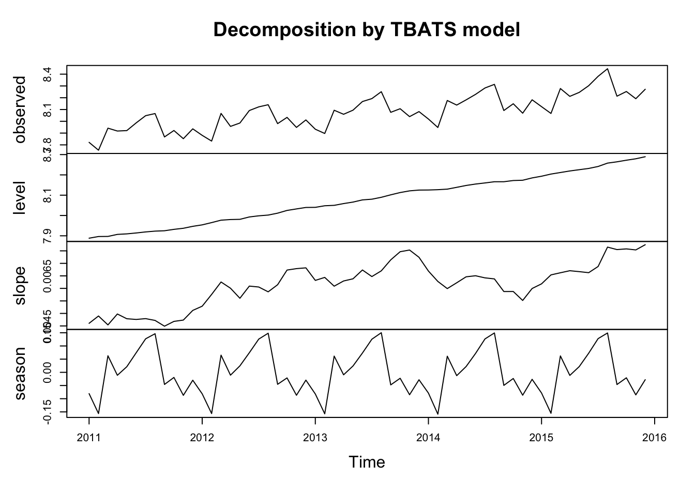

And the forecasting begins
ARIMA We can build ARIMA using the auto.arima function from the forecast package
fit.arima <- auto.arima(y)
print(fit.arima)## Series: y
## ARIMA(1,1,1)(0,1,0)[12]
##
## Coefficients:
## ar1 ma1
## 0.3698 -0.8957
## s.e. 0.1780 0.1001
##
## sigma^2 estimated as 8754: log likelihood=-279.46
## AIC=564.92 AICc=565.48 BIC=570.47# We produce the forecast in a similar way
f.arima <- forecast(fit.arima,h=12)
plot(f.arima)
lines(y.test,col="red")
TBATS (stands for something…)
Similar to ETS, TBATS also offers a decomposition of the series Works with hourly and daily data!!!
fit.tbats <- tbats(y)
f.tbats <- forecast(fit.tbats,h=12)
plot(f.tbats)
lines(y.test,col="red")
#
plot(fit.tbats)